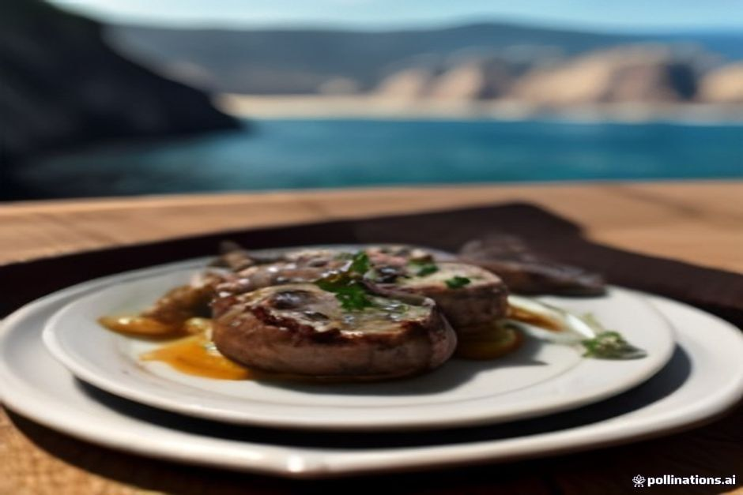
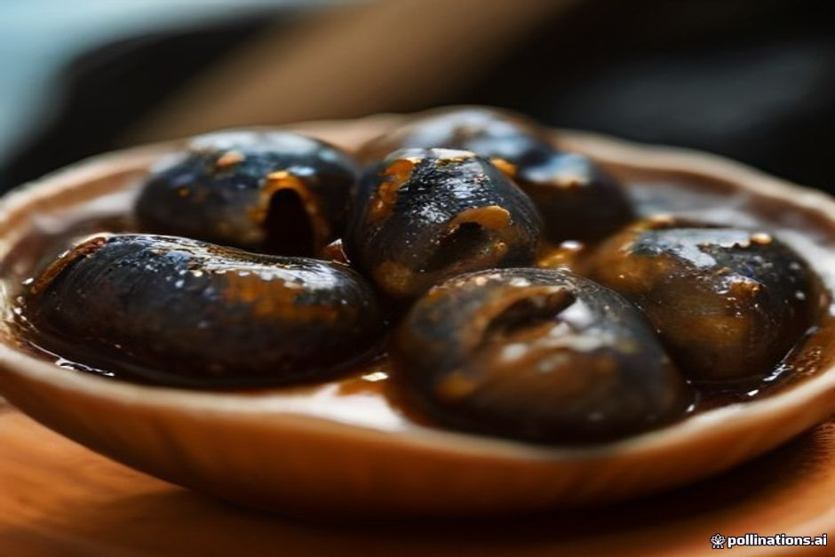

Siete a Madeira, aprite il menu di una tasca sul mare e leggete "lapas". Nessuna traduzione, nessuna foto. Sono le patelle, i molluschi dal guscio conico che si vedono attaccati agli scogli, e qui si mangiano alla griglia con burro all'aglio e limone. Questa guida vi dice cosa aspettarvi nel piatto, come si ordinano e dove vale la pena farlo.
Lapas significa patelle: di cosa parliamo
In portoghese lapa è la patella, e lapas è il plurale. Lo stesso mollusco, quindi, che molti di voi conoscono per averlo visto sugli scogli di mare: un guscio a cono basso, che aderisce alla roccia con una tenacia sorprendente.
A Madeira le lapas vivono sulle rocce vulcaniche, nella fascia battuta dagli spruzzi tra l'alta e la bassa marea. Si raccolgono a mano, di solito staccandole con un coltello, e si servono intere, nel loro guscio. Nessuno le sgancia per impiattarle.
Sull'isola non sono un piatto da occasione speciale. Sono l'antipasto che si ordina senza pensarci, con una birra o un bicchiere di vino bianco, mentre si aspetta il piatto principale, magari l'espetada.

Come sono le patelle alla griglia di Madeira
La ricetta è semplice, ed è questo il suo merito. Le lapas vanno sul fuoco vivo, ancora nel guscio, per un paio di minuti soltanto: il tempo che la polpa diventi soda senza diventare gommosa.
Poi arriva il condimento, versato direttamente nel guscio, che fa anche da piatto:
- burro fuso;
- aglio schiacciato;
- coriandolo fresco;
- una spruzzata di limone.
Alcune cucine usano il prezzemolo al posto del coriandolo, altre aggiungono un goccio di vino bianco al burro. Fuoco forte, aglio e limone, invece, si trovano in quasi tutte le versioni dell'isola.
Che sapore hanno: la domanda di chi non le ha mai provate
Sono sapide e un po' gommose, più vicine a una vongola soda che a un'ostrica, con una dolcezza leggera che il burro all'aglio accompagna senza coprire.
La consistenza è ciò che sorprende di più al primo assaggio. Un buon piatto ha una certa resistenza sotto i denti: non aspettatevi la morbidezza di altri molluschi. L'unico vero modo di rovinarle è cuocerle troppo.
Si mangiano dal guscio, con il pane per raccogliere il burro. È un piatto semplice, non raffinato, e il suo fascino sta proprio lì. Se vi piacciono le vongole e il sapore del mare, avete buone probabilità di apprezzarle.
Come ordinarle e riconoscere un buon piatto
Le lapas danno il meglio appena uscite dalla griglia: cotte sul momento e mangiate nei minuti successivi. Per questo conta più il posto che il nome sul menu.
- Guardate la cucina o la griglia. Meglio un locale dove si vedono vassoi freschi in lavorazione che uno con la foto del piatto sul menu.
- Ordinatele come antipasto, da dividere al centro del tavolo, prima del piatto principale.
- Chiedete il pane. Il burro all'aglio rimasto nel guscio è metà del piacere.
- Non scoraggiatevi per la consistenza. Un po' di resistenza è normale; una polpa dura e asciutta, invece, vuol dire cottura eccessiva.
Dove mangiare le lapas a Madeira
Le tascas di pesce della costa sud le servono come cosa ovvia. Câmara de Lobos, il villaggio di pescatori che è la prima tappa del nostro Day Trip, è particolarmente nota per questo. Vale lo stesso per le griglie sul porto, vicino alla Doca do Cavacas a Funchal.
Le trovate anche nei ristoranti di pesce più conosciuti di Funchal, vicino al centro storico e ai porti dei pescatori.
Se in giornata fate una gita in barca da Funchal, potete organizzare il pranzo o la cena di conseguenza: a Câmara de Lobos si passa comunque. Per l'itinerario completo guardate la gita di giorno, oppure la crociera al tramonto se preferite cenare dopo.

Perché oggi la raccolta delle patelle ha delle regole
Per decenni la raccolta a mano è stata così intensa da assottigliare le popolazioni di patelle lungo il tratto di costa rocciosa più facile da raggiungere. Le norme regionali di oggi fissano una misura minima del guscio, limitano zone e stagioni in cui si può raccogliere e mettono un tetto alla quantità per uso personale. Lo scopo è lasciare che gli stock si riprendano, su tratti di costa che un tempo venivano spogliati più in fretta di quanto riuscissero a rigenerarsi.
Per voi significa due cose. Le lapas che trovate nei ristoranti di solito hanno una dimensione visibile e regolare, non sono gli esemplari minuscoli che qualcuno ricorda di tanti anni fa. E se pensate di staccarne qualcuna dagli scogli per conto vostro, lasciate perdere: ci sono regole precise, ed è molto meglio mangiarle dove le cucinano per mestiere.
Cosa bere con le lapas
L'abbinamento classico è un vino bianco secco e ben freddo: taglia il burro all'aglio senza competere con la sapidità del mollusco. Un Madeira secco, il Sercial, servito freddo, fa lo stesso lavoro con più carattere. Anche la poncha regge bene, se è già quella che avete in mano.
Nessuna regola rigida. Le lapas sono cibo da bar quanto antipasto da ristorante, quindi va bene qualunque cosa fredda ci sia già in tavola.
Grigliate due minuti, mangiate in trenta secondi: ecco tutto il senso delle lapas.
Vale la pena ordinarle?
Raramente finiscono nelle classifiche dei "piatti da provare a Madeira" scritte per i turisti. Ma chiedete a chi vive su questa costa e vi dirà che le lapas sono semplicemente la prima cosa che si ordina. Se una tasca le ha fresche, sì, valgono la pena.
Se state ancora pianificando il viaggio, trovate tempi, punto d'incontro e dettagli pratici nella pagina informazioni, e altre letture nel nostro diario.